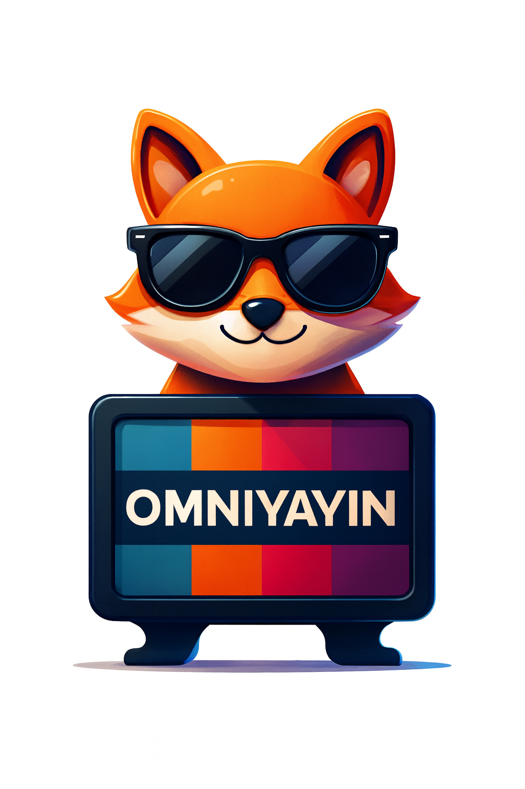

ULTIMATE PRO'YA ÖZEL İNDİRİM! Reklamsız, 4K canlı yayın ve arşiv erişimi.
Hemen Yükselt!

OMNİYAYI-N-
3
Bildirimler
Yargı
10 dakika içinde başlıyor.
Premium
üyeliğiniz yenilendi.
Yeni
kanalları eklendi!
Hoş Geldin, Kullanıcı!
Profilim
Ayarlar
Çıkış Yap
Yükleniyor...
Sırala:
Varsayılan
A-Z
Popüler (Sim)
Full Kapsamlı Yayın Akışı
Kanallar Yükleniyor...
Aramanızla eşleşen kanal bulunamadı.
Farklı bir anahtar kelime deneyin.